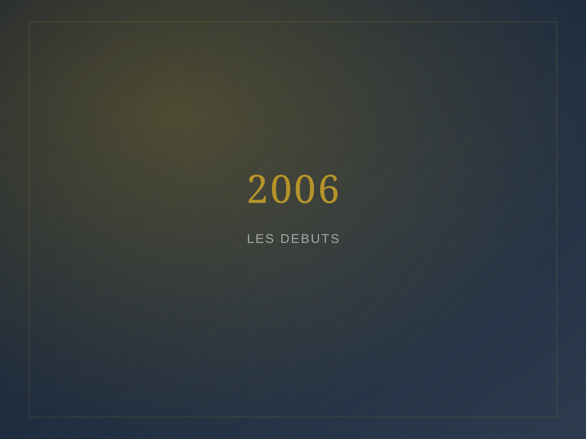
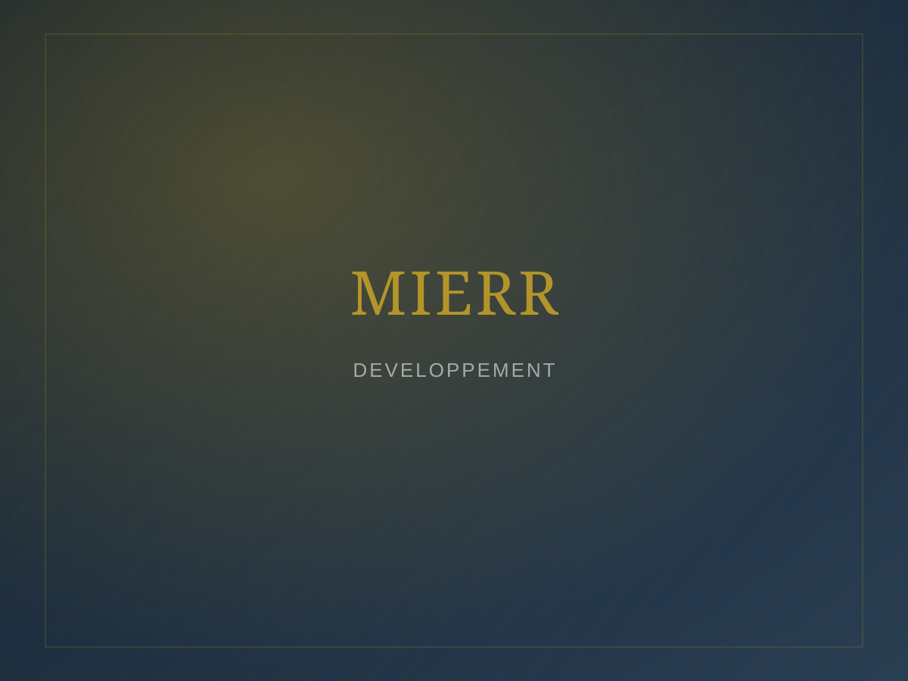
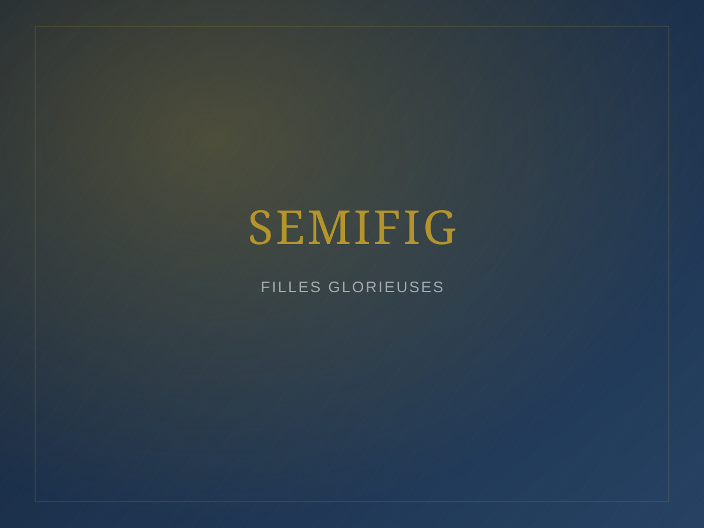
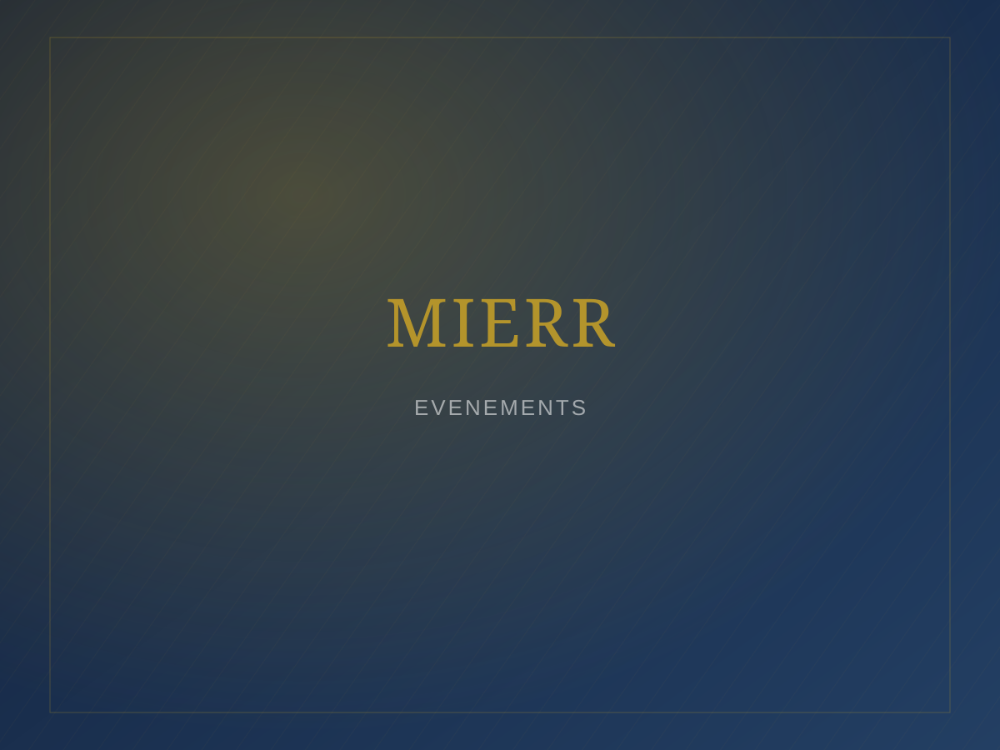

Accueil / Galerie
Galerie
Les archives photographiques de la MIERR, classées par année, activité et département.








Contenu à activer : ces vignettes sont des visuels de substitution. Depuis le futur tableau de bord, l'administrateur pourra ajouter des photos et créer de nouveaux albums sans toucher au code — voir LISEZ-MOI.md.